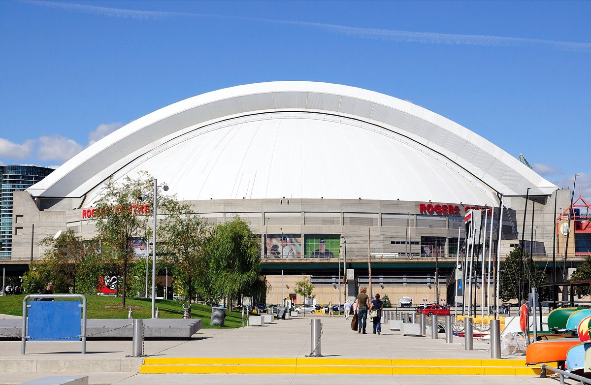
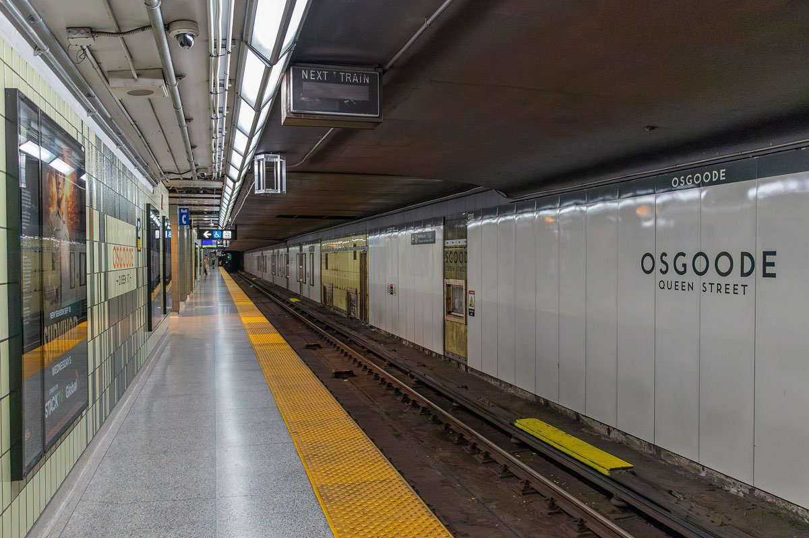

See the city from every angle
Landmarks, culture and the waterfront, plus everything for visitors.
Whatever you need from the City, start here.

Photo: Taxiarchos228, CC BY-SA 3.0 DE
Photo: Dillan Payne, CC BY-SA 4.0Each Toronto landmark opens a part of the City.
Landmarks, culture and the waterfront, plus everything for visitors.
Council, the Mayor, public notices and open data, all in one place.
Road closures, cycling, parking and repairs on the streets you use every day.
Big games, festivals, parks and places to book for your own event.
Bins, collection days, pets and the wildlife that make Toronto home.
Ferries to the Island, clean water, trees and what not to pour down the drain.
Property tax, utility bills, tenant rights and help finding a place to live.
Start, grow and run a business, or work with the City.
Non-emergency City services, 24/7. Report a problem, track a request or get answers.
311 TorontoThe full directory, five sections, no menus to dig through.